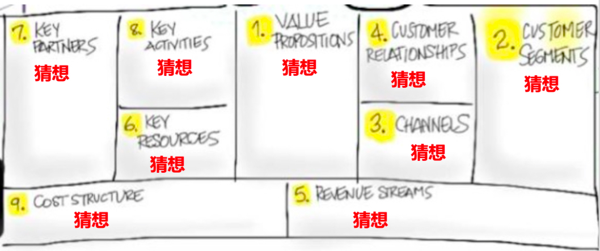
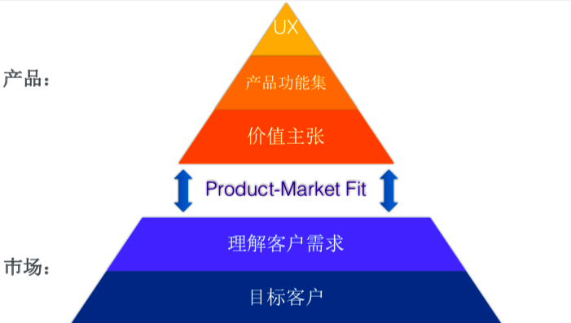

- 000 开篇词 卓越的团队，必然有一个卓越的领导者.md
- 001 你的能力模型决定你的职位.md
- 002 七位CTO纵论技术领导者核心能力.md
- 003 CEO实话实说：我需要这样的CTO.md
- 004 技术领导者不等于技术管理者.md
- 005 CTO的三重境界.md
- 006 像CEO一样思考.md
- 007 要制定技术战略，先看清局面.md
- 008 技术领导力就是成事的能力.md
- 009 CTO是商业思维和技术思维交汇的那个点.md
- 010 创业公司CTO的认知升级.md
- 011 最合适的技术才是最有价值的技术.md
- 012 谈谈CTO在商业战略中的定位.md
- 013 把脉高效执行的关键要素.md
- 014 从零开始搭建轻量级研发团队.md
- 015 定制高效研发流程.md
- 016 培养中层团队的管理认知.md
- 017 团队成长要靠技巧和体系.md
- 018 做到这四点，团队必定飞速成长.md
- 019 将企业打造成一所终身大学.md
- 020 论团队管理与共同升级.md
- 021 绩效管理的目标不仅仅是绩效考核.md
- 022 验证研发团队价值的绩效考核机制.md
- 023 产品技术团队OKR使用法则.md
- 024 996、987，程序员加班文化你怎么看？.md
- 025 建立有效的员工淘汰机制.md
- 026 让细节的病毒感染你的团队.md
- 027 如何在不同组织文化下推行技术管理.md
- 028 业务高速增长期的团队管理：知轻重、重绸缪、调缓急.md
- 029 被8成的人误解的工程师文化.md
- 030 关于工程师文化的六个问题.md
- 031 五位技术领导者的文化构建实战.md
- 032 文化是管理的那只无形之手.md
- 033 选对的人，做正确的事情.md
- 034 打好技术团队搭建的基础.md
- 035 做个合格的技术岗位面试官.md
- 036 高潜力人才的内部培养.md
- 037 技术创业该如何选择赛道.md
- 038 CTO要掌握的产品哲学：理性与人性的权衡.md
- 039 从客户价值谈技术创新.md
- 040 技术人投身创业公司之前，应当考虑些什么？.md
- 041 技术人创业前要问自己的六个问题.md
- 042 团队激励之分配好你的奖金.md
- 043 通过积分考核提升技术团队的绩效.md
- 044 空降技术高管的择业七计.md
- 045 选好人生下一站–CTO空降上篇.md
- 046 走出至暗时刻–CTO空降下篇.md
- 047 空降领导者平稳落地要做的四道题（上）.md
- 048 空降领导者平稳落地要做的四道题（下）.md
- 049 打造高效的研发组织架构：高效研发流程那些事（一）.md
- 050 你的研发流程符合你的组织架构吗？谈高效研发流程那些事（二）.md
- 051 聊聊研发流程管理中的那些坑：高效研发流程那些事（三）.md
- 052 数据如何驱动研发高效运转？谈高效研发流程那些事（四）.md
- 053 如何打造高效且敏捷的组织文化？谈高效研发流程那些亊（五）.md
- 054 打造高速运转的迭代机器：现代研发流程体系打造（一）.md
- 055 用机器打造迭代机器：现代研发流程体系打造（二）.md
- 056 有了敏捷开发，那交付期限去哪儿了？.md
- 057 敏捷中的期限之殇，软件业该怎么做？.md
- 058 如何打造个人技术品牌？.md
- 059 技术演，有章可循.md
- 060 正确对待技术演中的失误.md
- 061 刘俊强：技术最高决策者应该关注技术细节吗 .md
- 062 张溪梦：技术领袖需要具备的商业价值思维.md
- 063 未来组织形态带来的领导力挑战.md
- 064 如何判断业务价值的高低.md
- 065 如何打造高效的分布式团队？.md
- 066 如何打造有活力、持续创新的研发团队？.md
- 067 如何打造独属自己的工程师文化？.md
- 068 如何打造一个自组织团队？.md
- 069 茹炳晟：QE团队向工程效能团队转型的实践之路.md
- 070 技术、产品、管理的不同视角.md
- 071 什么样的人适合考虑管理角色.md
- 072 创业公司如何招到合适的人才.md
- 073 用数据来分析管理员工.md
- 074 为什么给了高工资，依然留不住核心员工？.md
- 075 刘俊强：一本正经教你如何毁掉一场技术演.md
- 076 内部技术会议的价值.md
- 079 程军：从0到1打造高效技术团队的方法论.md
- 080 技术Leader的持续成长.md
- 081 游舒帆：一流团队必备的商业思维能力.md
- 082 游舒帆：数据力，透过数据掌握公司经营大小事.md
- 083 游舒帆：运营力，让用户出现你期待的行为.md
- 084 游舒帆：策略力，让目标与行动具备高度一致性.md
- 085 游舒帆：敏捷力，拥抱不确定性，与VUCA共舞.md
- 086 刘俊强：管理者必备的高效会议指南（上）.md
- 087 刘俊强：管理者必备的高效会议指南（下）.md
- 088 刘俊强：做好一对一沟通的关键要素（上）.md
- 089 刘俊强：做好一对一沟通的关键要素（下）.md
- 090 程军：打造高效技术团队之招人.md
- 091 程军：打造高效技术团队之做事.md
- 092 成敏：技术负责人如何做优先级决策.md
- 093 兰军：团队研发效率低下的要因分析.md
- 094 兰军：提升产品团队研发效率的实践（上）.md
- 095 兰军：提升产品团队研发效率的实践（下）.md
- 096 阿禅：工程师转型产品经理可能踩到的坑.md
- 097 阿禅：工程师转型产品经理的必备思维.md
- 098 徐裕键：业务高速增长过程中的团队迭代.md
- 099 徐裕键：业务高速增长过程中的技术演进.md
- 100 徐裕键：团队文化建设，保持创业公司的战斗力.md
- 101 刘俊强：领导力提升指南之培养积极的态度.md
- 102 姚从磊：巧用AARRR模型，吸引优秀技术人才（一）.md
- 103 姚从磊：巧用AARRR模型，吸引优秀技术人才（二）.md
- 104 姚从磊：巧用 AARRR 模型，吸引优秀技术人才（三）.md
- 105 姚从磊：巧用 AARRR 模型，吸引优秀技术人才（四）.md
- 106 程军：技术人的「知行合一」（一）.md
- 107 刘俊强：消除压力的七种方法.md
- 108 谢呈：技术高手转身创业的坑和坡.md
- 109 谢呈：关于垂直互联网创业的一些经验之谈.md
- 110 成敏：创业公司为什么会技术文化产品缺失.md
- 111 蔡锐涛：从0到1再到100，创业不同阶段的技术管理思考.md
- 112 刘俊强：必知绩效管理知识之绩效管理循环.md
- 113 程军：技术人的「知行合一」（二）.md
- 114 成敏：谈谈不同阶段技术公司的特点.md
- 115 成敏：打造优秀团队与文化的三个推手.md
- 116 刘俊强：必知绩效管理知识之绩效目标的制定.md
- 117 程军：技术人的「知行合一」（三）.md
- 118 吴铭：成本评估是技术leader的关键素质.md
- 119 汤力嘉：CTO如何进行产品决策（一）.md
- 120 刘俊强：必知绩效管理知识之绩效数据收集（上）.md
- 121 刘俊强：必知绩效管理知识之绩效数据收集（下）.md
- 122 黄伟坚：创业中那些永远回避不了的问题.md
- 123 黄伟坚：用系统性思维看待创业.md
- 124 刘俊强：必知绩效管理知识之评定绩效.md
- 125 洪强宁：从程序员到架构师，从架构师到CTO（一）.md
- 126 洪强宁：从程序员到架构师，从架构师到CTO（二）.md
- 127 刘俊强：必知绩效管理知识之绩效沟通（一）.md
- 128 王坚：年轻人永远是创新的主体.md
- 129 刘俊强：必知绩效管理知识之绩效沟通（二）.md
- 130 刘俊强：必知绩效管理知识之绩效沟通（三）.md
- 131 汤力嘉：CTO如何在产品方面进行决策（二）.md
- 132 徐函秋：转型技术管理者初期的三大挑战（一）.md
- 133 徐函秋：转型技术管理者初期的三大挑战（二）.md
- 134 刘建国：我各方面做得都很好，就是做不好向上沟通.md
- 135 钮博彦：软件研发度量体系建设（一）.md
- 136 钮博彦：软件研发度量体系建设（二）.md
- 137 成敏：创业者不要成为自己公司产品技术文化的破坏者.md
- 138 于艺：以生存为核心，B端产品的定位心法.md
- 139 成敏：创业者应该具备的认知与思维方式.md
- 140 袁店明：创业产品必须迈过的鸿沟.md
- 141 徐毅：五星级软件工程师的高效秘诀（一）.md
- 142 徐毅：五星级软件工程师的高效秘诀（二）.md
- 143 徐毅：技术Leader应该具备的能力或素质.md
- 144 于艺：如何提升自己的能力与动力.md
- 145 李列为：技术人员的商业思维.md
- 146 刘天胜：打造高效团队，关键在于平衡人、事和时间（一）.md
- 147 刘天胜：打造高效团队，关键在于平衡人、事和时间（二）.md
- 148 肖德时：创业团队技术领导者必备的十个领导力技能（上）.md
- 149 肖德时：创业团队技术领导者必备的十个领导力技能（下）.md
- 150 暨家愉：技术人如何快乐的自我成长（上）.md
- 151 暨家愉：技术人如何快乐的自我成长（下）.md
- 152 施翔：如何打造7 24高效交付通道（上）.md
- 153 施翔：如何打造7 24高效交付通道（下）.md
- 154 谢东升：说说技术管理者从外企到民企的挑战.md
- 155 王可光：如何搭建初创团队之人才关.md
- 156 成敏：技术人转型管理的两大秘诀.md
- 157 成敏：技术人才的管理公式.md
- 158 胡峰：人到中年：失业与恐惧.md
- 159 黄云：技术管理者如何科学的做好向上管理.md
- 160 胡键：创业公司需要高凝聚力高绩效的技术团队.md
- 161 卢亿雷：企业发展的不同阶段，该如何打造高效的研发流程体系.md
- 162 王海亮：提升技术团队效率的5个提示（上）.md
- 163 王海亮：提升技术团队效率的5个提示（下）.md
- 164 陈崇磐：心理成熟度 - 创业公司识人利器.md
- 165 陈崇磐：管事与管人 - 如何避开创业公司组队陷阱.md
- 166 俞圆圆：合格CTO应该做好的5件事（上）.md
- 167 俞圆圆：合格CTO应该做好的5件事（下）.md
- 168 余加林：从技术人到创业合伙人必备的三个维度的改变.md
- 169 高琦：如何给研发打绩效不头疼而又公正？（上）.md
- 170 高琦：如何给研发打绩效不头疼而又公正？（下）.md
- 171 邱良军：如何有效地找到你心仪的人才.md
- 172 于人：研发团队人均产能3年提升3.6倍的秘诀（上）.md
- 173 于人：研发团队人均产能3年提升3.6倍的秘诀（下）.md
- 174 邱良军：打造高效技术团队，你准备好了吗！.md
- 175 邱良军：打造高效技术团队的人才招聘攻略.md
- 176 胡键：创业公司如何打造高凝聚力高绩效的技术团队：组织篇.md
- 177 胡键：创业公司如何打造高凝聚力高绩效的技术团队：工具篇.md
- 178 马连浩：用人的关键在于用人所长，而非改人之短.md
- 179 张矗：技术管理者必经的几个思维转变.md
- 180 钟忻：成为温格-聊聊如何当好CTO.md
- 181 姚威：技术团队管理中关于公平的五个核心准则.md
- 182 谢文杰：区块链的下一个十年.md
- 183 薛文植：技术管理的本质-要做尊重人性的管理.md
- 184 狼叔：2019年前端和Node的未来-大前端篇（上）.md
- 185 狼叔：2019年前端和Node的未来-大前端篇（下）.md
- 186 赵晓光：如何培养团队竞争力（上）.md
- 187 赵晓光：如何培养团队竞争力（下）.md
- 188 张嵩：从心理学角度看待小中型团队的管理.md
- 189 狼叔：2019年前端和Node的未来-Node.js篇（上）.md
- 190 狼叔：2019年前端和Node的未来-Node.js篇（下）.md
- 191 肖冰：如何建立高信任度的团队.md
- 192 崔俊涛：如何做好技术团队的激励（上）.md
- 193 崔俊涛：如何做好技术团队的激励（下）.md
- 194 刘俊强：2019年云计算趋势对技术人员的影响.md
- 195 吴晖：企业B2B服务打磨的秘诀-ESI.md
- 196 邱良军：关于做好技术团队管理的几点思考.md
- 197 邱良军：做好研发管理的3个关键.md
- 198 徐林：通过快速反馈建立充满信任的技术团队.md
- 199 宝玉：怎样平衡软件质量与时间成本范围的关系？.md
- 200 邱良军：沟通，沟通，还是沟通（上）.md
- 201 邱良军：沟通，沟通，还是沟通（下）.md
- 202 陈嘉佳：奈飞文化宣言（上）.md
- 203 陈嘉佳：奈飞文化宣言（下）.md
- 204 邱良军：从小处着眼，修炼文化价值观.md
- 205 邵浩：人工智能新技术如何快速发现及落地（上）.md
- 206 邵浩：人工智能新技术如何快速发现及落地（下）.md
- 207 许良：科创板来了，我该怎么办？.md
- 208 陈阳：科创板投资，未来哪些行业受益最大？.md
- 大咖对话 万玉权：如何招到并培养核心人才.md
- 大咖对话 万玉权：高效团队的关键，以目标为导向，用数据来说话.md
- 大咖对话 不可替代的Java：生态与程序员是两道护城河.md
- 大咖对话 从几个工程师到2000多个工程师的技术团队成长秘诀.md
- 大咖对话 以产生价值判断工程师贡献–读者留言精选.md
- 大咖对话 余沛：打造以最佳交付实践为目标的技术导向.md
- 大咖对话 余沛：进阶CTO必备的素质与能力.md
- 大咖对话 刘俊强：云计算时代技术管理者的应对之道.md
- 大咖对话 刘俊强：谈谈我对2019年云计算趋势的看法.md
- 大咖对话 创业就是把自己过去的经验快速的产品化.md
- 大咖对话 如何打造自我驱动型的技术团队？.md
- 大咖对话 如何高效管理8000多规模的技术团队.md
- 大咖对话 季昕华：以不变的目的应对多变的技术浪潮.md
- 大咖对话 对人才的长期投资是人才体系打造的根本.md
- 大咖对话 张建锋：创业可以快而大，也可以小而美.md
- 大咖对话 彭跃辉：保持高效迭代的团队是如何炼成的.md
- 大咖对话 彭跃辉：解决用户痛点就是立足于市场的秘诀.md
- 大咖对话 徐毅：如何提升员工的活力与动力？.md
- 大咖对话 徐毅：打造高效研发团队的五个维度及相关实践.md
- 大咖对话 技术人创业前衡量自我的3P3C模型.md
- 大咖对话 技术人真正需要的是升维思考.md
- 大咖对话 技术管理者应该向优秀的体育教练学习.md
- 大咖对话 未来技术负责人与首席增长官将如何协作？.md
- 大咖对话 李昊：创业公司如何做好技术团队绩效考核？.md
- 大咖对话 李智慧：技术人如何应对互联网寒冬.md
- 大咖对话 杨育斌：技术领导者要打造技术团队的最大化价值.md
- 大咖对话 池建强：做产品不要执着于打造爆款.md
- 大咖对话 焦烈焱：从四个维度更好的激发团队创造力.md
- 大咖对话 玉攻：四个维度看小程序与App的区别.md
- 大咖对话 王坚：我从不吃后悔药.md
- 大咖对话 王平：从人、事、价值观、文化等维度看技术团队转型.md
- 大咖对话 王平：如何快速搭建核心技术团队.md
- 大咖对话 王鹏云：技术人创业该如何选择合伙人？.md
- 大咖对话 王鹏云：管理方式的差异是为了更好地实现企业商业价值.md
- 大咖对话 王龙：利用 C 端连接 B 端实现产业互联网是下半场的重中之重.md
- 大咖对话 童剑：用合伙人管理结构打造完美团队.md
- 大咖对话 管理者是首席铲屎官？.md
- 大咖对话 胡哲人：技术人创业要跨过的思维坎.md
- 大咖对话 袁店明：如何将打造自组织团队落诸实践.md
- 大咖对话 袁店明：打造高效研发团队的五个要点.md
- 大咖对话 让团队成员持续的enjoy.md
- 大咖对话 谢孟军：技术人如何建立自己的个人品牌.md
- 大咖对话 谭待：架构的本质是折中.md
- 大咖对话 陈天石：AI 芯片需要技术和资本的双重密集支撑.md
- 大咖对话 陈斌：如何打造高创造力、高动力的技术团队.md
- 大咖对话 陶真：技术人要爱上问问题，而不是自己的解决方案.md
- 大咖对话 韩军：CTO转型CEO如何转变思路.md
- 大咖对话 项目成功的秘诀–技术产品双头负责制.md
- 大咖对话 顾旻曼：投资时我们更多地是在找优秀的团队.md
- 大咖对话 高斌：过分渲染会过度拉高大众对人工智能的期望.md
- 大咖问答 发现下一个小米，不是只能靠运气.md
- 大咖问答 打造自己的个人品牌，你也可以.md
- 新春特辑1 卓越CTO必备的能力与素质.md
- 新春特辑2 如何成长为优秀的技术管理者？.md
- 新春特辑3 如何打造高质效的技术团队？.md
- 新春特辑4 如何打造高效的研发流程与文化？.md
- 新春特辑5 如何做好人才的选育用留？.md
- 温故而知新 一键直达，六大文章主题索引.md
- 结束篇 即使远隔千山万水，也要乘风与你同往.md
140 袁店明：创业产品必须迈过的鸿沟
你好，我是袁店明，DellEMC资深敏捷咨询师、培训师，精益创业导师。我曾在2014年做了一年的独立咨询，期间辅导了多个创业公司。在这个过程中，我一直在思考并探索产品需求的来源，今天，我总结了一些个人探索和辅导经验并分享给你，希望能给你有所启发。
据福布斯数据统计。创业产品的20种死法中，排名第一位的是没有市场需求（No market need），很多创业公司在创业时根本没有明确产品的市场需求，就推出产品，这是失败的主因。
那么如何明确我们的产品有市场需求，并与市场匹配呢？最直接的方法就是提出假设并验证它，用一句玩笑话来说，就是把投资人的钱烧光之前找到可行的商业模式和正确的产品逻辑、产品路径。
价值主张与用户细分
下图是一张商业模式画布，在一款产品开始前，可能你会做商业模式画布，当产品做完后，进行复盘时，你会发现，最初的商业模式画布中的九个格子可能都是你的猜想，没有一个经过你的验证。

那如何把猜想变成现实，就是我们接下来要解决的问题。首先，我们来看商业模式画布中正中间的一个模块，价值主张（Value Propositions），价值主张不是产品，更不是创意，而是产品要提供给用户的价值。换句话说，价值主张是产品的内涵，是你真正所要表现的东西，而产品是你给用户提供价值的媒介。因此我们不能只将所有精力投入产品中，产品只是外在的表现形式，我们需要清楚产品能够带给用户何种价值主张，能够帮助用户解决什么样的问题或痛点。事实上，当我们清楚了产品的价值主张后，针对不同的用户，产品形式可能会有多种，那么谁是我们的最终用户呢？
接下来就是商业模式画布中的第二步Customer Segments，即用户细分或者客户细分，在汉语中，用户和客户是两个不同的概念，这里我们主要谈用户。我们需要思考两个问题：
- 用户是谁，是哪一个细分人群？
- 他们所处的场景是什么，为什么要买我们的产品？
举个例子，我在2014年辅导过一个创业产品是视频服务，我建议创业者将所有的目标用户列出来，再把这些用户的场景列出来，场景包括人物、时间、地点等。当然，人物就是他所列出的用户细分。当他列完之后，我当场就否定了他的创业产品，因为对于他所列出的用户细分人群而言，所需要的数据流量价格太贵了，所以很难做起来。结果他没有听取我的辅导建议，没有坚持多久还是放弃了。
在这个案例中，对于产品的场景，除了时间与地点外，关键还在于网络环境。因此我想说，对于现在的APP产品，虽然如今流量价格大大降低了，但我们仍然需要考虑网速问题。比如是处于WiFi场景，还是处于非WiFi场景，是处于高速的4G流量环境，还是属于低速4G流量环境，等等。

明确了价值主张与用户细分，我们再来看这张产品-市场匹配（Product-Market Fit）模型图，顶层的UX是用户体验，在UX下层是产品功能集，再下一层是价值主张。而价值主张是我们真正要提供给用户的，根据最深层的用户需求而来。由此可见，我们只要明确价值主张与用户之间是否匹配，就可以确定产品与市场的匹配关系。我们可以按照一套行之有效的逻辑进行验证，就是提出假设、设计实验、验证和学习。首先假设用户细分人群和场景，接着设计一个实验来验证假设，然后收集反馈结果，最后通过不断的学习和有价值的用户反馈，对产品进行快速迭代优化，以期匹配市场。
四步走策略
根据上述的推理逻辑，我在辅导创业产品时一般有四个步骤。
第一步，提出假设。
假设的前提是建立价值主张，明确产品创意和解决方案以及你想带给用户的价值。这里举个反例，某创业公司中有七八个人，但每个人对对产品的价值理解都不同，对产品的未来方向理解不一，这就是典型的价值主张不明确。当我们确定价值主张之后，就可以提出问题假设，并在办公室画出商业模式画布，
第二步，验证假设。
基于价值主张，我们可以进行逻辑推理。首先是用户人群细分，尽可能发散，因为每个人群的特性不同，需要解决的问题不同，即使问题相同，不同的用户人群所需要的解决方案也不同。其次是针对每个用户细分人群列出场景，即时间和地点，需要注意的是，时间、地点、人物这三要素仅仅是基于价值主张来考虑。此时需要抛弃你最初的创意，因为创意是你强加给用户的解决方案，此时最重要的是研究清楚基于价值主张，你的最终用户人群是哪些，他们有什么痛点。接着考虑问题，每个用户细分人群在各类场景下碰到了什么样的问题，一个问题可能由多个因素组成，我们需要把问题拆解，猜想构成这个问题的所有可能性因素，最后把这些猜想都设计成访谈问题，走出办公室，针对真实用户进行验证。
第三步，提出验证方案。
我们需要开发高保真产品原型，找到最终用户进行真实试用，并验证方案的可行度。比如前面提到的视频服务案例，当时创始人的想法是给医生与患者提供远程视频医疗服务，我问他，“现在的微信或QQ视频不能满足这种需求吗？”他说“不行，因为医生要看患者的化验报告单。”我反问他，“真的需要看吗？”于是我们就去访谈医生，医生表示并不会看化验报告单，如果要看，可以让患者拍照。这个结果就验证了远程视频医疗的猜想是不可行的。
第四步，证实或转向，
在我们验证猜想时能够得到真实用户的反馈，明确最终用户是否认为产品能够解决他们的问题，如果是，继续验证下一个问题或下一个用户细分人群，如果多个问题都被否决，我们就要重新考虑价值主张，也就是创业产品的转型。一个方向走不通，我们就要尝试下一个方向，转型时就涉及到产品的重新定位，即价值主张需要重新设定。
总而言之，就是从建立价值主张、列出假设用户与场景到提出问题、验证问题的过程。
案例分享
我分享三个案例，都是我在2014年辅导的创业公司，每个案例中所遇到的问题都不同。
案例一：简七理财
这个产品的创始人当时还在大公司做理财顾问，工作之余，通过写公众号文章、博客以及组织线下读书会等各种活动聚集用户，想为这群用户提供所有可能的理财产品或服务，比如基础的理财教育、基础的投资知识、自己的理财平台、导流到银行等机构的理财产品、导流到投资平台等等。
当时，他的想法是为小白用户提供价值投资，我和他将所有创意列出来之后，根据逻辑推理流程，我建议他从理财产品、投资教育和理财教育这三个方向中做出选择。他当时非常犹豫，因为在我辅导他之前，他已经投入了两年时间摸索创业。在他团队中，有人认为他们要卖理财产品，而他作为创始人，认为他要做理财教育，但同时，还想做导流到银行的理财产品，这就是典型的价值主张不明确问题。
他认为通过各种方式将用户汇聚到平台上，就能解决问题，事实却不是这样，不清楚用户的问题，或者不明确能够给用户提供何种价值，即使有再多的用户，也可能一夜之间流失。
结果，经过半年的尝试和思考，他终于确定了方向，决定做理财教育，正好赶上知识付费的风口，有了不错的发展。
案例二：VEO纽视科技
它最初的价值主张是“VEO是一家在线云视频服务提供商，为开发者提供主打视频通讯能力的PAAS平台服务，提供的API、SDK和打包的应用程序，支持视频通话、屏幕共享、注释、示例代码和在线文档等服务。”
它的典型错误就是在未进行每一个细分领域的产品-市场匹配的情况下，直接决定做平台服务，认为用户一定会用。而且，在2014年的短视频热潮下，他断定风口来了，于是，我按照逻辑推理，将所有创意、问题等列出来，建议他一一验证，以此来明确某个细分领域是否可行。
当时他列出的想法包括公司多点视频会议、视频远程教学（早教、成人学习）、远程视频医疗、视频面试、视频客服等，比如对于公司多点会议这个想法，因为大公司都有自己的视频会议系统，而小公司对视频会议的需求较小，几乎不会用到这样的系统，所以就此否定。其余的想法也几乎全部被否定，于是他最后还是回到代理服务，虽然难以做大，但至少是赚钱的。
案例三：美人工厂
这个创业公司想解决的用户痛点是，电商平台不能试穿衣服，而他的解决方案是从服装厂商拿到产品并设立线下门店，给用户提供试穿。这时，我们需要列出用户细分人群和场景，是一线、二线还是十八线城市？首先因为他的合作品牌都是中小品牌，所以在一线设立门店不占优势，需要去二三线城市，而对于小品牌或者低消费人群来说，也没有太大必要设立线下门店。因此只剩中型品牌在二三线城市设立门店的选择，可是消费人群受限，得不到扩展。这个案例就是用户细分人群的问题。
总结
面对创业产品可能会遇到的各种问题，我们都可以执行这套推理逻辑，就是基于价值主张，寻找用户细分人群，以人物、时间、地点出发，提出假设问题，并猜想构成问题的所有因素，再逐一验证所有的这些假设。针对这些证实的问题和痛点提出解决方案。这个逻辑可以帮助我们更加准确的匹配价值主张与用户之间的关系，提高产品与市场的匹配度。
感谢收听，我们下期再见！如果你觉得这篇文章对你有帮助的话，也欢迎把它分享给更多的朋友~
作者简介
袁店明，DellEMC资深敏捷咨询师、Progam Manager，精益创业导师。曾任职于百度，辅导过多个产品线转型，在阿尔卡特朗讯就职期间，负责上海贝尔多个产品线的敏捷教练和敏捷培训师工作。目前在Dell EMC担任产品线的Program Manager，负责整个产品线的项目集管理与转型。曾经担任Agile China 2012的执行副主席，Scrum Gathering Shanghai 2012年和2013年的评审委员会负责人，QCon 上海和北京的专题出品人，《敏捷教练-如何打造优秀的敏姐团队》合译者。致力于探索团队发展和组织转型、团队引导、可视化管理、精益创业、持续集成、欣赏式探询、演讲和培训。
© 2019 - 2023 Liangliang Lee. Powered by gin and hexo-theme-book.